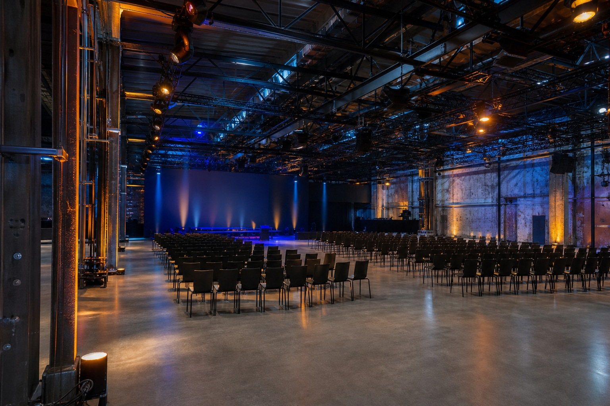
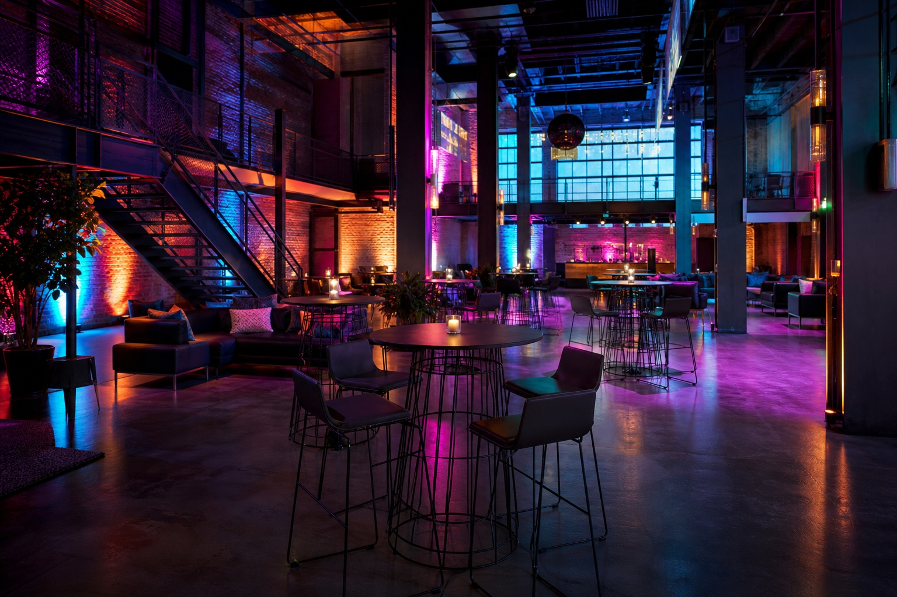

［ 현장 등록 불가 · 사전 티켓 필수 · 입장 시 QR 확인 ］
Venue
성수 에스팩토리
1970년대 공장을 개조한 복합 문화 공간입니다. 서울 성동구 성수동, 성수역에서 도보 7분.
오시는 길
Location서울 성동구 아차산로 000 · 지하철 2호선 성수역 3번 출구 도보 7분 · 주차 공간이 협소하니 대중교통을 권장합니다.
층별 안내
Floor Guide1F · 로비 & 등록
체크인 · 굿즈 · 스폰서 부스
2F · 트랙 A
AI · 320석
2F · 트랙 B
웹 · 220석
3F · 트랙 C
인프라 · 180석
3F · 네트워킹 바
커피 · 라운지 · 채용관


자주 묻는 질문
FAQ주차가 가능한가요?
행사장 내 주차는 매우 제한적입니다. 인근 공영주차장을 이용하시거나 대중교통을 권장합니다.
점심이 제공되나요?
양일 모두 점심 도시락이 티켓에 포함됩니다. 채식 옵션은 티켓 구매 시 선택할 수 있습니다.
세션 녹화는 공개되나요?
대부분의 세션은 녹화되어 행사 약 3주 후 참가자에게 먼저 공개되고, 이후 일반 공개됩니다. 일부 세션은 연사 요청으로 비공개입니다.
노트북 전원을 쓸 수 있나요?
모든 트랙 좌석에 멀티탭이 배치되며, 네트워킹 바에도 충전 구역이 있습니다.
커뮤니티 행동강령이 있나요?
네. 모든 참가자·연사·스태프는 행동강령(Code of Conduct)에 동의합니다. 위반 시 별도 안내에 따라 조치됩니다.
환불 규정은 어떻게 되나요?
행사 14일 전까지 100% 환불, 7일 전까지 50% 환불되며 이후에는 환불이 어렵습니다. 티켓 양도는 1회 가능합니다.